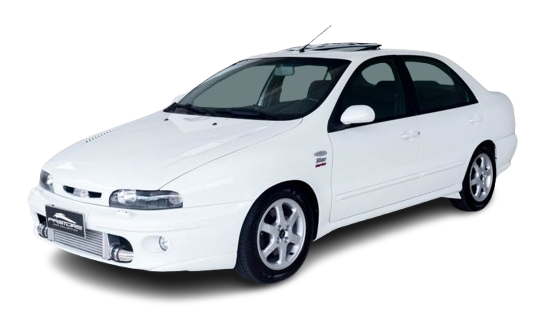

MAREA TURBO
Com o coração italiano e alma de foguete, o Marea Turbo é a máquina incompreendida que ainda hoje acelera o debate e a paixão por sua performance explosiva.

HISTÓRIA
Sucessor espiritual do Tempra Turbo e Tempra Stile e responsável por carregar o legado dos Fiat turbinados, o Marea Turbo foi o carro mais veloz do Brasil em sua época, com 223 km/h de velocidade máxima e zero a 100 km/h em 7,9 s.
O motor cinco cilindros em linha turbinado, configuração e ronco historicamente ligados aos Audi Quattro/S2/RS2.
Este motor 2.0 20V rendia 182 cv a 6.000 rpm e 27 mkgf de torque a 2.750 rpm e era fabricado na planta italiana Fábrica Motori Automobilistici em Pratola Serra, sul da Itália. O motor era pertencente à família C, uma evolução dos Fiat Twin Cam, e equipou lá fora carros como o Bravo, Fiat Coupé (em uma configuração de 220 cv).
O motor turbo de cinco cilindros do Marea era uma tela em branco para entusiastas. Muitos proprietários exploravam seu potencial de modificação para obter ainda mais potência.
No entanto, havia também aqueles que preferiam manter o carro no estado original, aproveitando o desempenho de fábrica, o Marea era altamente customizável, com entusiastas que aproveitavam ao máximo seu motor turbo de cinco cilindros para obter mais potência.
FICHA TECNICA
Modelo: Marea Turbo
Ano: 1999–2007
Motor: 2.0 20V turbo
Potência: 182 cv
Torque: 27 kgfm
0–100 km/h: 7,2 s
Vel. Máx: 230 km/h
Peso: 1.370 kg
Tração: Dianteira
Câmbio: Manual 5 marchas
Dimensões (C×L×A): 4.463×1.740×1.420 mm
CURIOSIDADE
Esse motor, derivado da família Pratola Serra da Fiat, entregava 182 cavalos de potência e 27 kgfm de torque. Isso fazia do Marea Turbo o carro de produção nacional mais potente de sua época (quando foi lançado em 1998), superando até mesmo modelos de categorias superiores. A sua aceleração de 0 a 100 km/h era feita em torno de 7,5 segundos, um número impressionante para um sedã familiar, o que lhe rendeu o apelido de "foguete". Essa performance extrema, aliada a um preço relativamente acessível, criou o mito e a notoriedade em torno do modelo.
GALERIA
Imagens do Marea Turbo
Canal: Carro Chefe